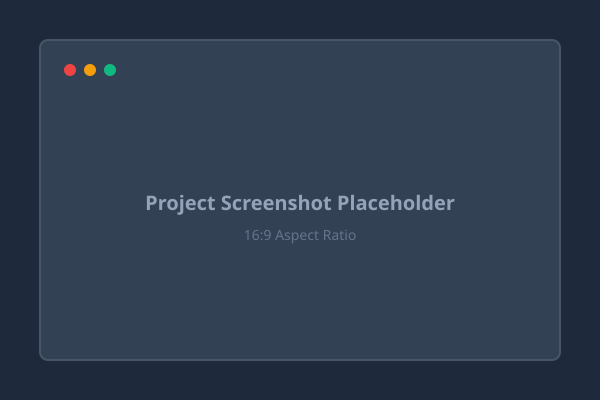
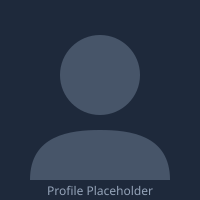

Active ProjectPersonal Developer Portfolio
A fully responsive, accessible personal portfolio website engineered with pure HTML5, CSS3, and Vanilla JavaScript. Features theme switching, smooth scrolling, and mobile drawer navigation.
Hello, I'm
[Your Professional Headline]
Passionate about crafting modern, responsive, and accessible web experiences. Currently developing full-stack web solutions as part of the Datheon Internship Program.

Background, passions, and development philosophy
I am an aspiring full-stack software developer committed to writing clean, maintainable, and standards-compliant code. With a strong foundation in modern web technologies, I focus on building accessible, user-friendly digital products that solve practical problems.
My journey involves working across both frontend interface design and structured software architecture. I value simplicity, continuous learning, and thorough testing to ensure software reliability across diverse devices.
Currently participating in the Datheon Full Stack Web Development Internship, I am focused on mastering modern web standards, responsive user interfaces, and modular JavaScript architecture.
Frontend architecture, responsive design, component development, and user accessibility.
Semantic structure, cross-browser compatibility, web performance, and clean documentation.
Expanding full-stack engineering skills and delivering verified, production-ready web applications.
Core languages, technologies, and developer tooling
Selected development work and technical project demonstrations

Active ProjectA fully responsive, accessible personal portfolio website engineered with pure HTML5, CSS3, and Vanilla JavaScript. Features theme switching, smooth scrolling, and mobile drawer navigation.
A streamlined task tracker providing status sorting, priority filtering, and client-side data persistence with localStorage. Designed for productivity and responsive task management.
A dynamic weather application communicating with external meteorological REST APIs to present real-time climate conditions, multi-day forecasts, and atmospheric indicators.
Academic background, professional trajectory, and downloadable credentials
[University or College Name]
[Expected Graduation / Study Period]
Relevant coursework: Web Development, Algorithms, Database Systems, Software Engineering.
Datheon Internship Program
October 2026 – Present
Designing and building responsive, accessible web applications adhering to modern industry standards.
Download the latest version of my full resume in PDF format for offline review and recruitment consideration.
Download Resume (PDF)Format: PDF | Verified File
Interested in collaborating, hiring, or discussing a project? Let's connect.
Review my open-source code repositories, contributions, and commits.
github.com/[Your-GitHub]Connect with me on LinkedIn to explore professional networking.
linkedin.com/in/[Your-LinkedIn]